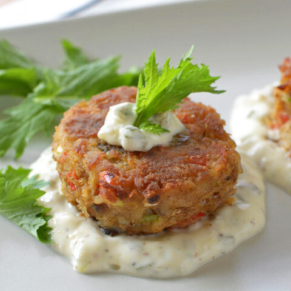
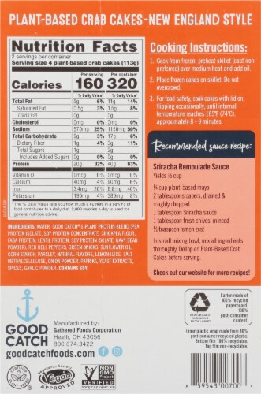
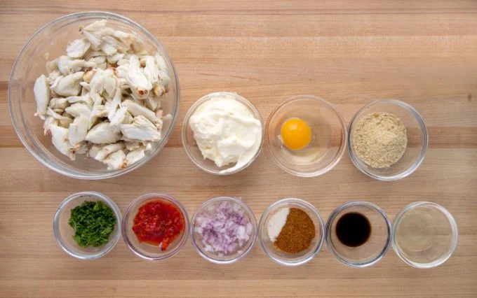

<!DOCTYPE html>

<html lang="en">
  <head>
    <meta charset="UTF-8">
    <title>Recipes</title>
  </head>
</html>
<body>
    <h1>Crab Cakes Recipe</h1>
    
    <p><strong>I am going to provide a few points of information on Crab Cakes incliunding: <ol><li>Nutrional facts.</li>
    <li>Ingredients involved in the crab cakes.</li>
  <li>Simple information pertaining crab cakes.</li></ol></strong></p>

  <h2>Nutional information</h2>
  
  <p><ol><li><strong> Why are crab cakes healthy?</strong>
    Crab is packed with protein, which is important for building and maintaining muscle. Crab also contains high levels of omega-3 fatty acids, vitamin B12, and selenium. These nutrients play vital roles in improving general health while helping prevent a variety of</li>
    -
    <li><strong>Why do I feel so good after eating crab?</strong>
    It's because of the high amount of protein, zinc, and vitamin B12 that's abundant in the crustacean. So when you're able to take in regular amounts of crab, the nutrients of the crab goes to work to help reduce pain and produce erythrocytes to fight off infection.</li>
  -
    <li><strong>What are the benefits of crab cakes?</strong>
    Crab is also high in omega 3 fatty acids that help moderate your blood pressure while reducing your risk of heart disease. Omega 3 fatty acids also reduce inflammation, enhance the function of your immune system and lower your risk of certain types of cancer.</li>
  </ol></p>

  <p><strong>Vegan Crab Cakes: 
    Total Fat 6g,
    
    Cholesterol 0mg, 
    Sodium 170mg,
    Potassium 70mg,
    Total Carbohydrates 13g, 
    Dietary Fiber 2g, 
    Protein 3g.
    </strong></p>
</body>

<!--Finshed first parts of instructed list:includes boilerplate, images, links, my list of added info im working on finshing -->

<h3>Crab Cake Description:</h3>
<b><p>A crab cake is a variety of fishcake popular in the United States. It is composed of crab meat and various other ingredients, such as bread crumbs, mayonnaise, mustard (typically prepared mustard, but sometimes mustard powder), eggs, and seasonings. It is then sautéed, baked, grilled, deep fried, or broiled.</p></b>


<h4>Ingredients List:</h4>
<b><p><ol><li>Crab meat-
  Traditionally made with jumbo lump crab meat, but you can also use flaky crab meat from the rest of the crab. Using both types of meat creates a better consistency.</li>
<li>Eggs and mayonnaise-
  These bind the crab meat together. </li>
  <li>Breadcrumbs-
    Panko-style breadcrumbs are coarser than Italian breadcrumbs and work well in crab cakes. </li>
<li>Seasonings
  Common seasonings include celery salt, red and black pepper, Old Bay seasoning, garlic powder, and cayenne pepper. You can also add mustard, Worcestershire sauce, or hot sauce. </li>
</ol></p>

<p>Crab cakes can be baked, grilled, sautéed, broiled, or deep fried. They can be served as an appetizer or main course. You can pair crab cakes with dipping sauces, lemon rice, a fresh salad, roasted vegetables, potatoes, corn, wine, or dessert.</p>
</b>

<!-- finished up facts, description, and ingrident list sections// last section will be steps in a list -->


<h5>Steps to making crab cakes:</h5>
<b><p><ol><li>Prepare the crab meat-Remove any shell pieces from the crab meat and gently fold it into a bowl with other ingredients. You can use lump crab meat, which is more affordable and works well for crab cakes. The goal is to keep the crab meat in large chunks.</li>
  <li>Add binding ingredients-Mix in an egg and breadcrumbs to bind the crab meat together. The egg's protein and liquid act as a glue, while the breadcrumbs absorb excess liquid. You can also add mayonnaise to add moisture.</li>
<li> Add other ingredients-Season with Old Bay seasoning, mustard, Worcestershire sauce, or other seasonings. You can also add chopped fresh parsley for color and freshness. If you want to add vegetables, you can finely mince red, green, orange, or yellow bell pepper and blend it into the mixture.</li>
<li>Form the crab cakes-Mix everything together by hand, being careful not to overwork the crab meat. Form the mixture into patties.</li>
<li>Cook the crab cakes-You can bake, broil, pan-fry, grill, or deep fry the crab cakes. Pan-frying in neutral oil can produce a crunchy crust.</li>
</ol></p>

<p>You can also refrigerate the mixture for at least 30 minutes and up to a full day to help the crab cakes hold together.</p>
</b>

<!-- Finshed last section for the ingridents. wanting to add more recipes//undecided on which ones -->
